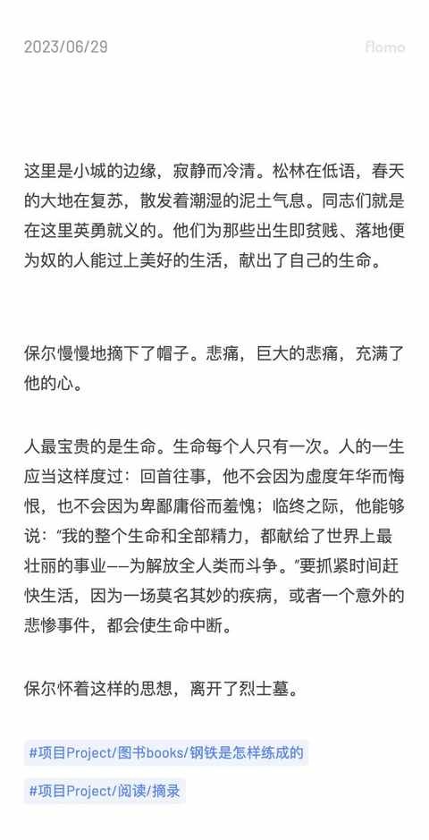

日更的第 18 天，聊聊我为什么要挑战日更 100 天
一、知晓有这样一个事情
为什么把知晓这样一个简单的原因放在第一个，那是因为仅仅是知道并明白某些道理和逻辑，已经是有门槛的一件事。
在十多年前，公众号开始流行的时候就能看到很多人分享日更的内容，也有一些公众号在践行日更的理念，在十年如一日的做一件事。
当下在各个平台，依然能刷到相关内容，很多创作者在成为自媒体博主之前也都尝试过连续多天的日更，甚至有些是长达几年的。

作为一个 普通且迷之 自信的中年男人，内心出现一个声音：“既然这个人可以，写的东西也就那样，那么结论就是：我也能做到！”。
那么，从做决定的那天天开始写就好咯。
二、中年人要用好空闲时间
物质决定意识，当物理层面没有变化的时候，意识、心态、想法都较为稳定，而当出现物理层面的变化之后，之前不是问题的问题也就成为了问题。
相信和我一样的中年人，都有这样的感受：
- 随着年龄的增长，发现人是会变的，而且状态有起伏。
- 可能去年能专注做的事情，今年就突然没兴趣了。
我现在正处于类似阶段，在这样从未有过的状态中有大半年了，去年同期的时候每个月能看完 8 本书，今年平均每个月 1-2 本书，而且专注度很差，越看越看不进去书和长文章。
不喜欢更不适应这样的状态，虽然运动能调整状态，但每天的运动时间只占清醒时间的 10%-20%，在大段的时间里面，自己能深深地感受到自身状态的变化。
我的应对方式是：不断输出！
在输出相关内容的时候，我是能专注的做事的，是能有一些思考的和想法的，时间一天天的过着，至少能留下一些痕迹而不是到年底盘点全年情况时候的懊恼，然后说：“如果……”。
三、 练习 记录与表达
一件事情自己 必须先熟练了之后，再去尝试各种框架和方法论，要不然都是无用功，然后得出错误结论和判断后不了了之。
这个浅显的道理，我也是在 看了很多方法论、教程、工作流之后在实践中才发现，即便是他人验证过多次的方式方法，在脱离一定量的练习下去尝试也是必然失败。
日更 100 天是很好的练习方式：
1）不给自己设置主题限制，因为能聊的十分有限
2）不设置不切实际的目标，不求阅读量等数据
3）不追求记录和表述的有多好，先把事情和想法讲清楚
都知道量变会引起质变，但每个人需要的量都不一样，在完成 100 天日更之后，或许是一小步也可能是一大步，肯定不可能是：原地踏步！
和我坚持跑步类似，持续跑步并非为了参加各种比赛，而是为了在大部分时候都有比较好的身体机能。
在当下互联网无限嵌入个人生活中，表达的能力尤为重要是在于，在网络上的表达也代表着某种话语权，我肯定做不了网红，但我必须有足以自保的能力。
可能普通人更需要有的记录和表达的习惯，因为各种名人和网红大 V 是天然的焦点，有太多人为他们记录和表达。
记录与表达都有其意义，但有意义的前提都是先有记录和表达的存在。
四、 自我摸索的机会
小时候经常问爷爷奶奶他们那时候有多苦，是不是和电视上一样之类的。
即使我那时候年龄很小，但完全能从和他们的交流中和他们的生活习惯中确定他们那时候很苦。
但问来问去就是爷爷奶奶的回答都是：“ 那时候苦啊！ ”。后面也跟着一些例子，但对于小时候的我来说，是想象不出来的，因为很多提及的东西与场景都没见过。
现在早就过了物资匮乏的阶段，我和老婆孩子常住上海，和农村老家隔着 600 多公里，日更 100 天是一个极佳的可以自我摸索的机会！
用现在依然触动我的《钢铁是怎样炼成》中的一段文字作为日更第 18 天文章的的结尾：
